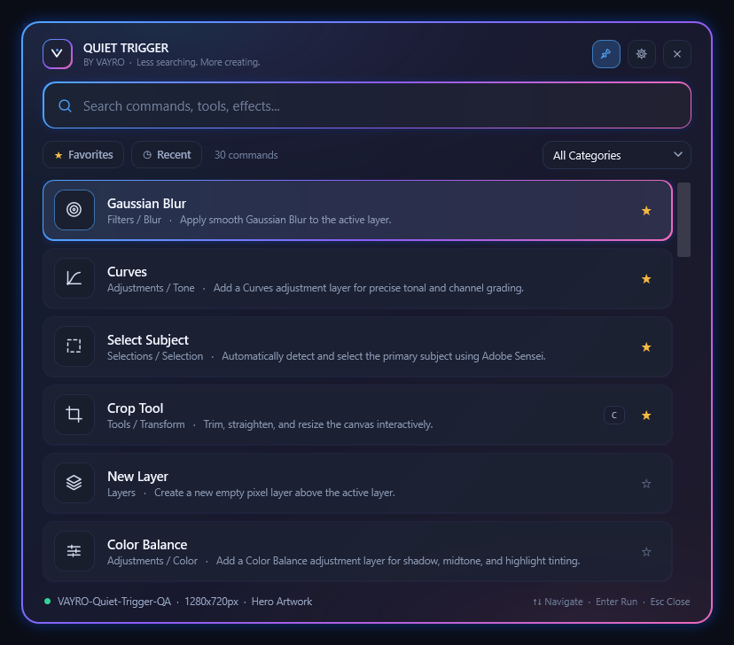
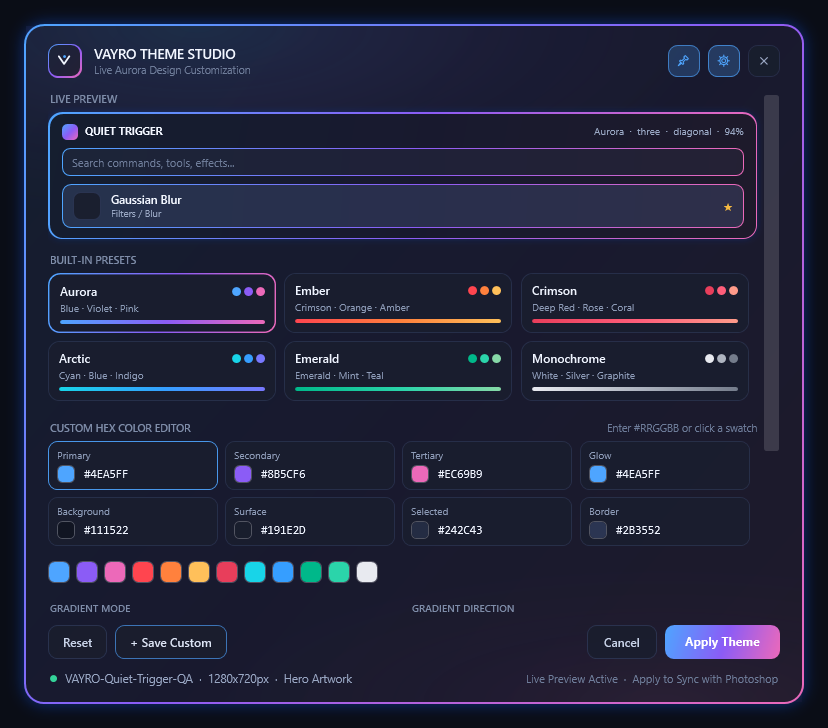
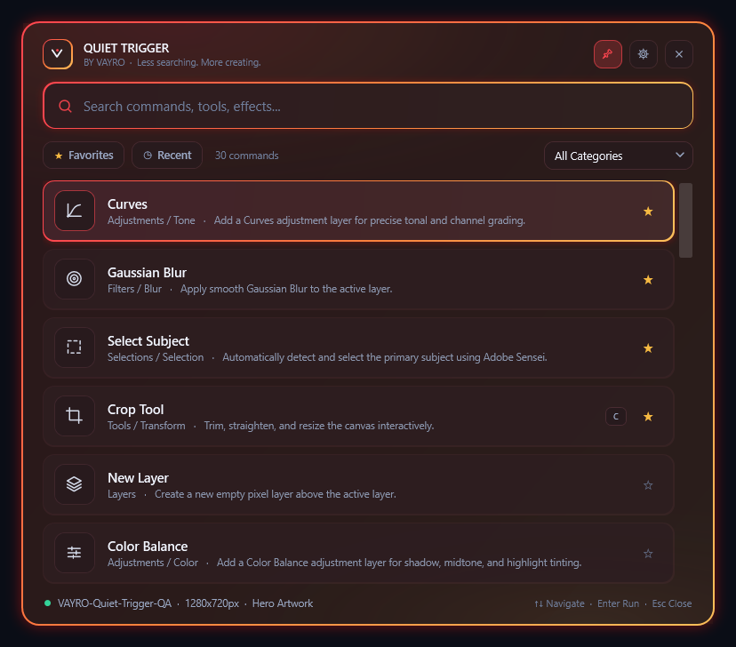
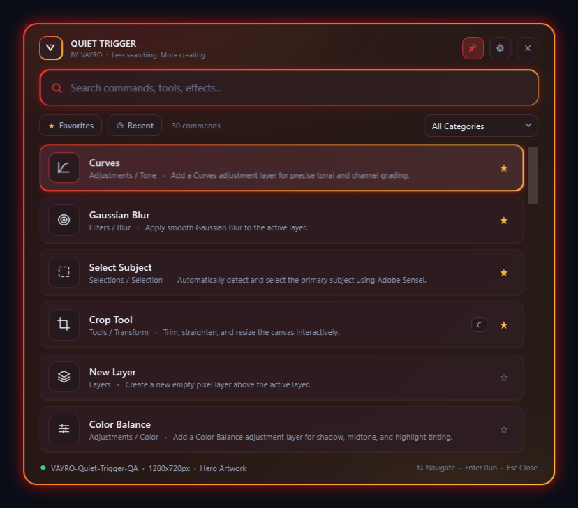

Instant Fuzzy & Bilingual Search
Type partial fragments like gblr, aliases like usm or crv, or Persian queries like بلور, ماسک, and کراپ. Pin Favorites and recall Recent Commands immediately.
A keyboard-driven command palette for Adobe Photoshop. Find tools, effects, adjustments, and commands without interrupting your creative workflow.

Real capture of Quiet Trigger v2.1.0 floating palette (Aurora preset) connected to Adobe Photoshop 2025 v26.8.1.
VAYRO Studio develops focused creative productivity software designed to reduce menu hunting and preserve creative focus. Quiet Trigger is our flagship Adobe Photoshop UXP command palette — combining a docked Photoshop UXP panel with an optional frosted Windows floating palette.
Type partial fragments like gblr, aliases like usm or crv, or Persian queries like بلور, ماسک, and کراپ. Pin Favorites and recall Recent Commands immediately.
Summon the frosted floating palette directly over Adobe Photoshop with Ctrl+Alt+Space. The silent system tray helper activates only when Photoshop is focused and runs without any terminal window.
See live document dimensions, active layer name, and safety pre-flight guards before running commands. Destructive actions like Delete Layer, Merge, Rasterize, and Crop prompt confirmation.
Switch between 6 built-in themes or craft custom gradients, glow intensity, surface translucency, opacity, corner radius, and UI density with real-time synchronization across UXP and Windows WPF.
Communication between Photoshop and the Windows companion runs strictly over 127.0.0.1:47821 with a per-user 256-bit random session token verified using constant-time comparison.
Use the single-file per-user Windows Installer for the complete floating palette + UXP plugin experience, or install the standalone Photoshop-only .ccx package when you only need the docked panel.
Every command was tested in Adobe Photoshop 2025 v26.8.1 on Windows 10 x64. 92 of 98 commands are live-verified PASS; the remaining 6 have clearly documented interactive GPU workspace or Adobe Sensei cloud requirements.
19 / 19 Verified
Move, Brush, Clone Stamp, Healing, Spot Healing, Eraser, Gradient, Pen, Type, Crop, Marquee, Lasso, Quick & Object Selection.
13 / 17 Verified · 4 GPU
Gaussian, Motion & Surface Blur, Smart Sharpen, Unsharp Mask, High Pass, Noise, Median, Ripple, Twirl, Emboss, Find Edges, plus 4 full-screen GPU workspaces.
15 / 15 Verified
Non-destructive adjustment layers: Curves, Levels, Brightness/Contrast, Exposure, Hue/Saturation, Color Balance, B&W, Vibrance, Gradient Map, and more.
14 / 14 Verified
New, Duplicate, Delete, inline Rename, Merge, Group/Ungroup, Lock/Unlock, Convert to Smart Object, Rasterize, Clipping & Layer Masks.
8 / 10 Verified · 2 Sensei
Select All, Deselect, Reselect, Inverse, Feather, Expand, Contract, Smooth, plus Adobe Sensei Select Subject & Remove Background.
11 / 11 Verified
New Document, Image Size, Canvas Size, Crop to Selection, Rotate 90° CW/CCW, Flip Horizontal/Vertical, Guide Layout, Grid, Document Info.
7 / 7 Verified
Fit on Screen, 100% Actual Pixels, Zoom In, Zoom Out, Show/Hide Guides, Show/Hide Rulers, and Show/Hide Extras.
5 / 5 Verified
Quick Export as PNG, Export as JPEG, Save a Copy, Export As dialog, and Export Selected Layers.
Choose from 6 built-in themes — Aurora, Ember, Crimson, Arctic, Emerald, and Monochrome — or edit all 8 HEX tokens, 1/2/3-color gradients, glow intensity, surface style, opacity (0.72–1.00), corner radius, and UI density.
Click a built-in preset to preview its exact color palette from themeSystem.js:



Both artifacts are published directly on GitHub Releases with SHA-256 checksums. Understand the exact difference before downloading.
.exe)File: VAYRO-Quiet-Trigger-Setup-2.1.0-x64.exe (23.78 MB)
.ccx) via official Adobe UPIAQuietTriggerHelper.exe) and bundled portable Node.js runtime for the local loopback bridge.ccx)File: VAYRO-Quiet-Trigger-Photoshop-2.1.0.ccx (74.3 KB)
Quiet Trigger is distributed independently today via GitHub Releases. An Adobe Creative Cloud Marketplace listing is currently in draft preparation under a dedicated Marketplace plugin ID and is not yet submitted or approved by Adobe. A direct Marketplace link will be added here only after official approval is received.
127.0.0.1:47821, never external interfaces.crypto.timingSafeEqual; unauthorized calls return HTTP 401.minVersion: 24.0.0.